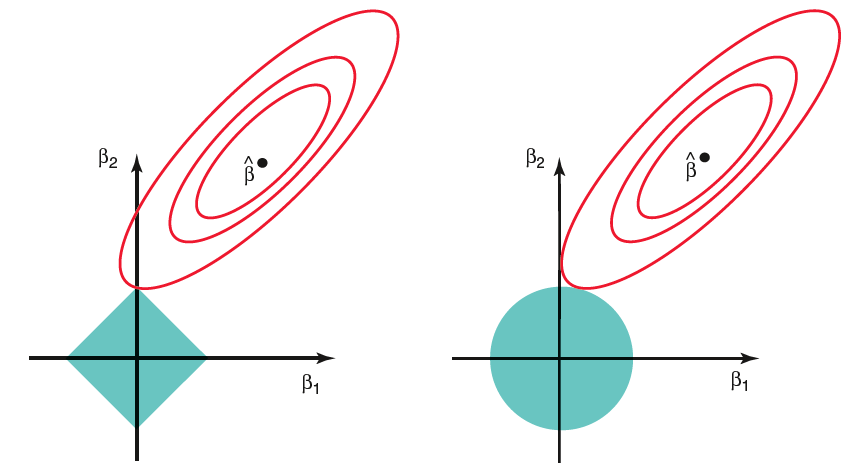

3.3 Shrinkage Methods
The variable-selection methods discussed earlier work well when the number of predictors is moderate (for example, level-wise algorithms are practical for \(p<40\)). In this section we study two shrinkage methods that can handle larger \(p\) by continuously shrinking coefficient estimates toward zero, thereby balancing the bias–variance trade-off.
We can re-frame the earlier approaches as a single penalized least-squares problem:
Regression with Penalization
\[\begin{align*} \hat{\beta} &= \arg\min_{\beta} ||\mathbf{y} - \mathbf{X}\beta||^2 + \underbrace{\lambda \sum_{j=1}^{p} \mathbf{1}_{\beta_j \neq 0}}_{\text{penalty}}\\ &= \arg\min_{\beta} ||\mathbf{y} - \mathbf{X}\beta||^2 + \underbrace{\lambda ||\beta||_0}_{\text{penalty}} \end{align*}\] where \(||\beta||_0 = \sum_{j=1}^{p} \mathbf{1}_{\beta_j \neq 0}\) simply counts the number of non-zero coefficients. Different choices of the penalty parameter \(\lambda\) recover the information criteria we studied previously.
Replacing the \(\ell_0\) “norm” by a convex surrogate yields two of the most widely used penalized regression methods:
Ridge Regression \[\hat{\beta} = \arg\min_{\beta} ||\mathbf{y} - \mathbf{X}\beta||^2 + \underbrace{\lambda ||\beta||^2}_{\text{penalty}}, \text{ where } ||\beta||^2 = \sum_{j=1}^{p} \beta_j^2\]
Lasso Regression \[\hat{\beta} = \arg\min_{\beta} ||\mathbf{y} - \mathbf{X}\beta||^2 + \underbrace{\lambda |\beta|}_{\text{penalty}}, \text{ where } |\beta| = \sum_{j=1}^{p} |\beta_j|\]
Before examining the mathematics and implementation of these methods, we note two important practical considerations.
Implementation Considerations
Neither the \(\ell_1\) nor the \(\ell_2\) penalty is invariant to location or scale. Consequently the penalized estimators are sensitive to the units in which the predictors are measured. It is therefore standard practice to center and scale each column of the design matrix:
\[\tilde{\mathbf{x}}_{j} = \frac{ \mathbf{x}_{j} - \bar{\mathbf{x}}_{j} } { sd_{\mathbf{x}_{j}}} \]
and to center the response, \[\mathbf{\tilde{y}}_i = \mathbf{y}_{i} - \bar{\mathbf{y}}\]
After model fitting the coefficients can be transformed back to the original scale for interpretation and prediction. The intercept is recovered by
\[\hat{\beta}_0 = \bar{y} - \sum_{j=1}^{n} \hat{\beta}_j \bar{\mathbf{x}}_{j} \]
The R package
glmnetperforms the centering, scaling, and back-transformation automatically.)
In Python,
scikit-learn’s Ridge, Lasso, and ElasticNet do not automatically center and scale the predictors. You should do this yourself—most commonly by placing a StandardScaler inside a Pipeline. The fitted coefficients are then returned on the scaled scale; you can transform them back to the original scale if needed. There is also a Python port of the original glmnet Fortran code that mirrors the R package’s automatic standardization and back-transformation behavior.
3.3.1 Ridge Regression
Ridge regression shrinks the coefficients of a linear model by adding an \(\ell_2\) penalty. It is especially useful when predictors are highly collinear and ordinary least-squares estimates become unstable. The method was originally introduced by Tikhonov as a way to stabilize the normal equations by adding a non-negative constant to the diagonal of \(\mathbf{X}^\top\mathbf{X}\).
Ridge Regression
Solve \[\text{minimize}_{\beta}\, (y-X \beta)^T(y-X \beta) + {\color{blue}{\lambda \sum_j \beta_j^2}}\] for a fixed \(\lambda \ge 0\).
After the predictors have been standardized and the response centered, the ridge estimator admits the closed-form expression
\[\hat{\beta}_{\text{Ridge}}=(X^T X+\underbrace{\lambda I}_{\text{ridge}})^{-1} X^T y\]
When \(\lambda=0\) the estimator reduces to ordinary least squares; as \(\lambda\to\infty\) the coefficients shrink to zero. In practice \(\lambda\) is chosen by cross-validation (or generalized cross-validation). A well-known drawback is that the ridge estimator is biased: \(\mathbb{E}(\hat{\beta}_{\text{ridge}})=\beta+\text{bias}\).
To gain intuition, first suppose the columns of \(\mathbf{X}\) are orthonormal, so that \(\mathbf{X}^\top\mathbf{X}=\mathbf{I}_p\). Then
\[\hat{\beta}_{ridge} = \bigl(\mathbf{X}^T \mathbf{X} + \lambda I \bigr)^{-1} \mathbf{X}^T \mathbf{y} = \frac{1}{1+\lambda} \mathbf{X}^T \mathbf{y}\] and the fitted values satisfy \[\hat{\mathbf{y}}_{ridge} = \mathbf{X} \hat{\beta}_{ridge} = \frac{1}{1+\lambda}\; \hat{\mathbf{y}}_{LS} \]
When the columns are not orthogonal the same geometric picture can be obtained via the singular-value decomposition (SVD).
Singular Value Decomposition (SVD)
The SVD is a fundamental matrix factorization used throughout applied mathematics, statistics, and machine learning. Principal-component analysis is a special case of the SVD.
SVD of \(\mathbf{X}_{n\times p}\)
Any matrix \(\mathbf{X}_{n\times p}\) admits the factorization \[\mathbf{X} = \mathbf{U}_{n\times p} \; \mathbf{D}_{p\times p}\, \mathbf{V}_{p\times p}^T\]
where
\(\mathbf{U}_{n\times p}\) has orthonormal columns that span \(\mathcal{C}(\mathbf{X})\),
\(\mathbf{V}_{p\times p}\) is an orthogonal matrix whose columns span \(\mathbb{R}^p\),
\(\mathbf{D}_{p\times p}\) contains the singular values \(d_1\ge\dots\ge d_p\ge 0\).
If any \(d_j=0\), then \(\mathbf{X}\) is rank-deficient.
This factorization of the matrix \(\mathbf{X}\) is called the singular value decomposition of \(\mathbf{X}\), and the columns of \(\mathbf{U}\) and \(\mathbf{V}\) are called the left- and right-hand singular vectors of \(\mathbf{X}\).
For the remainder of the discussion we assume \(n>p\) and \(\operatorname{rank}(\mathbf{X})=p\) (so \(d_p>0\)).
Useful Properties of the SVD
The right singular vectors (columns of \(\mathbf{V}\)) are orthonormal eigenvectors of \(\mathbf{X}^\top\mathbf{X}\).
The left singular vectors (columns of \(\mathbf{U}\)) are orthonormal eigenvectors of \(\mathbf{X}\mathbf{X}^\top\).
The columns of \(\mathbf{V}\) are the principal-component directions of the columns of \(\mathbf{X}\).
The first principal-component direction \(\mathbf{v}_1\) maximizes the sample variance of the linear combination \(\mathbf{z}_1=\mathbf{X}\mathbf{v}_1=\mathbf{u}_1 d_1\) among all unit-norm coefficient vectors.
The singular values are the square roots of the eigenvalues of both \(\mathbf{X}^\top\mathbf{X}\) and \(\mathbf{X}\mathbf{X}^\top\).
The largest singular value satisfies \[ d_1=\max_{\|\mathbf{x}\|=1}\|\mathbf{X}\mathbf{x}\|_2. \]
The principal-component scores are the columns of the matrix \(\mathbf{S}=\mathbf{U}\mathbf{D}\); they give the coordinates of the observations in the principal-component basis: \[ \mathbf{X}=\mathbf{S}\mathbf{V}^\top. \]
SVD of Fitted Values: LS vs. Ridge
Using the SVD we can write the ordinary-least-squares fitted values as
\[\begin{align*} {\color{blue}{\hat{\mathbf{y}}_{LS}}} &= \mathbf{X} \hat{\beta}_{LS}= \mathbf{X} \bigl(\mathbf{X}^T \mathbf{X} \bigr)^{-1} \mathbf{X}^T \mathbf{y}\\ &= \mathbf{U} \; \mathbf{D}\; \mathbf{V}^T \bigl(\mathbf{V}\; \mathbf{D}^2\; \mathbf{V}^T\bigr)^{-1} \mathbf{V}\; \mathbf{D}\;\mathbf{U}^T \mathbf{y}\\ &= \mathbf{U} \; \mathbf{D}\; \mathbf{V}^T \bigl( \mathbf{V}^T \bigl)^{-1}\; \mathbf{D}^{-2}\; \mathbf{V}^{-1} \mathbf{V}\; \mathbf{D}\;\mathbf{U}^T \mathbf{y}\\ &= \mathbf{U} \; \mathbf{D}\; \mathbf{D}^{-2}\mathbf{D}\;\mathbf{U}^T \mathbf{y}\\ &= {\color{blue}{\mathbf{U} \mathbf{U}^T \mathbf{y}}}\\ &= {\color{blue}{\sum_{j=1}^{p} \bigl(\mathbf{u}_j^T \mathbf{y} \bigr) \mathbf{u}_{j}}} \end{align*}\] (The algebraic steps rely on \(\mathbf{X}^\top\mathbf{X}=\mathbf{V}\mathbf{D}^2\mathbf{V}^\top\) and the orthonormality of \(\mathbf{U}\) and \(\mathbf{V}\).)
For ridge regression the same calculation yields
\[\begin{align*} {\color{blue}{\hat{\mathbf{y}}_{ridge}}} &= \mathbf{X} \hat{\beta}_{ridge}\\ &= \mathbf{X} \bigl(\mathbf{X}^T \mathbf{X} + \lambda \mathbf{I} \bigr)^{-1} \mathbf{X}^T \mathbf{y}\\ &= \mathbf{U}\;\mathbf{D}\;\mathbf{V}^T \bigl( \mathbf{V}\; \mathbf{D}^2\; \mathbf{V}^T + \lambda \mathbf{I} \bigr)^{-1}\mathbf{V}\;\mathbf{D}\;\mathbf{U}^T \mathbf{y}\\ &= \mathbf{U}\;\mathbf{D}\;\mathbf{V}^T \bigl( \mathbf{V}\; \mathbf{D}^2\; \mathbf{V}^T + \lambda \mathbf{V}\mathbf{V}^T \bigr)^{-1}\mathbf{V}\;\mathbf{D}\;\mathbf{U}^T \mathbf{y}\\ &= \mathbf{U}\;\mathbf{D}\;\mathbf{V}^T \bigl( \mathbf{V}\; \bigl( \mathbf{D}^2 + \lambda \mathbf{I} \bigr)\; \mathbf{V}^T \bigr)^{-1}\mathbf{V}\;\mathbf{D}\;\mathbf{U}^T \mathbf{y}\\ &= \mathbf{U}\;\mathbf{D}\;\mathbf{V}^T (\mathbf{V}^T)^{-1}\; \bigl( \mathbf{D}^2 + \lambda \mathbf{I} \bigr)^{-1}\; \mathbf{V}^{-1}\mathbf{V}\;\mathbf{D}\;\mathbf{U}^T \mathbf{y}\\ &= {\color{blue}{\mathbf{U}\mathbf{D}\;\bigl( \mathbf{D}^2 + \lambda \mathbf{I} \bigr)^{-1}\; \mathbf{D}\mathbf{U}^T \mathbf{y}}} \end{align*}\]
Thus ridge regression projects \(\mathbf{y}\) onto the principal-component basis and then multiplies the \(j\)-th coordinate by the shrinkage factor \(d_j^2/(d_j^2+\lambda)\). Components associated with small singular values (low-variance directions) are shrunk more aggressively.
In this last expression note that
\(\mathbf{D}(\mathbf{D}^2+\lambda\mathbf{I})^{-1}\) is a diagonal matrix whose \(j\)-th diagonal entry is \(\dfrac{d_j^2}{d_j^2+\lambda}\),
the vector \(\mathbf{U}^\top\mathbf{y}\) contains the coordinates of \(\mathbf{y}\) in the orthonormal basis spanned by the columns of \(\mathbf{U}\).
Consequently the ridge fitted values simplify to \[ {\color{blue}{\hat{\mathbf{y}}_{\text{ridge}} = \sum_{j=1}^{p}\mathbf{u}_j\cdot\frac{d_j^2}{d_j^2+\lambda}\cdot(\mathbf{u}_j^\top\mathbf{y})}}. \] In other words, ridge regression first projects \(\mathbf{y}\) onto the principal-component basis and then multiplies each coordinate by the shrinkage factor \(\dfrac{d_j^2}{d_j^2+\lambda}\). Equivalently, the ridge estimator shrinks the ordinary-least-squares coefficients by these same factors: the smaller the singular value \(d_j\) (i.e., the lower the sample variance of the corresponding principal component), the stronger the shrinkage.
Complexity of Ridge Regression
To quantify the complexity of a model, heuristically we need to understand the number of coefficients that need to be estimated. Ordinary least squares with \(p\) predictors has \(p\) degrees of freedom. Because ridge regression shrinks coefficients, its effective degrees of freedom lie strictly between \(0\) and \(p\). If \(\lambda\) is extremely large, there will be no effective covariates left in the model, meaning that they should all be close to zero. On the other hand, if \(\lambda\) is 0, then we go back to linear regression with \(p\) covariates and \(p\) degrees of freedom.
A convenient definition of degrees of freedom is \[df = \sum_{i=1}^{n} Cor \bigl(y_i,\; \hat{y}_i \bigr)\]
- For ordinary least squares \(\hat{\mathbf{y}}=\mathbf{H}\mathbf{y}\) with \(\mathbf{H}=\mathbf{X}(\mathbf{X}^\top\mathbf{X})^{-1}\mathbf{X}^\top\), so
\[df = \sum_{i=1}^{n} Cor \bigl(y_i,\; \hat{y}_i \bigr) = \sum_{i=1}^{n} H_{ii} = tr \bigl( \mathbf{H} \bigr) = p\]
- For ridge regression \(\hat{\mathbf{y}}=\mathbf{S}_\lambda\mathbf{y}\) where \[ \mathbf{S}_\lambda=\mathbf{X}(\mathbf{X}^\top\mathbf{X}+\lambda\mathbf{I})^{-1}\mathbf{X}^\top. \] Hence \[\begin{align*} df(\lambda) &= \sum_{i=1}^{n} Cor \bigl(y_i,\; \hat{y}_i \bigr) = \sum_{i=1}^{n} [S_{\lambda}]_{ii}\\ &= tr(\mathbf{S}_{\lambda}) \\ &= tr(\mathbf{X} \bigl(\mathbf{X}^T \mathbf{X} + \lambda \mathbf{I} \bigr)^{-1} \mathbf{X}^T)\\ &= tr\Biggl( \sum_{j=1}^{p} \frac{d_j^2}{d_j^2 + \lambda} \mathbf{u}_i \mathbf{u}_i^T\Biggr) = \sum_{j=1}^{p} \frac{d_j^2}{d_j^2 + \lambda} \end{align*}\] The effective degrees of freedom decrease monotonically with \(\lambda\) and equal \(p\) when \(\lambda=0\). This expression is often used to choose a grid of \(\lambda\) values that correspond to integer degrees of freedom \(k=1,\dots,p\).
3.3.2 Lasso Regression
Lasso regression replaces the \(\ell_2\) penalty by an \(\ell_1\) penalty.
Lasso Regression
Solve \[\text{minimize } (y-X \beta)^T (y-X\beta) + \lambda \sum_j |\beta_j|\] for a fixed \(\lambda \ge 0\).
In two-dimensions the lasso constraint defines a square, while in higher dimensions it defines a polytope.
Lasso is useful when the response can be explained by few predictors with zero effect on the remaining predictors (Lasso is similar to a variable selection method). When \(\beta_j=0\) the corresponding predictor is eliminated which is not the case for ridge regression. Therefore, we use lasso when the effect of predictors is sparse. This means that only few predictors will have an effect on the response (e.g. gene expression data) or when number of predictors is large (\(p>n\)).
Unlike ridge regression, the lasso estimator does not admit a closed-form expression in general. When the columns of \(\mathbf{X}\) are orthonormal, however, the problem separates coordinate-wise and the solution is given by soft-thresholding.
The lasso solution is defined as \[\hat{\beta}_{lasso} = \arg \min_{\beta\in \mathbb{R}^{p}} \Bigl((y-X \beta)^\top(y-X\beta) + \lambda \sum_j |\beta_j| \Bigr)\] and does not have a closed form expression.
If we assume that \(\mathbf{X}^T\mathbf{X} = \mathbf{I}_p\), then \[\begin{align*} ||\mathbf{y} - \mathbf{X}\beta||^2 &= ||\mathbf{y} - \mathbf{X}\hat{\beta}_{LS} + \mathbf{X}\hat{\beta}_{LS} - \mathbf{X}\beta||^2\\ &=||\mathbf{y} - \mathbf{X}\hat{\beta}_{LS}||^2 + ||\mathbf{X}\hat{\beta}_{LS} - \mathbf{X}\beta||^2 \end{align*}\] where \[2 \bigl( \mathbf{y} - \mathbf{X}\hat{\beta}_{LS}\bigr)^T \bigl( \mathbf{X}\hat{\beta}_{LS} - \mathbf{X}\beta \bigr) = 2 \; r^T \; \bigl( \mathbf{X}\hat{\beta}_{LS} - \mathbf{X} \beta\bigr) =0\] since the second term is a linear combination of columns of \(\mathbf{X}\) no matter what value \(\beta\) takes, and thus is in \(\mathcal{C}(\mathbf{X})\), therefore orthogonal to the residual vector \(\mathbf{r}\).
Obtaining the Lasso Solution
Under the orthonormality assumption \(\mathbf{X}^\top\mathbf{X}=\mathbf{I}_p\) the lasso criterion reduces to a sum of \(p\) independent one-dimensional problems of the form
\[\arg \min_{x} \bigl( x-a \bigr )^2 + \lambda |x|,\,\, \lambda >0\]
The lasso solution can be expressed as:
\[\begin{align*} \hat{\beta}_{lasso} &= \arg \min_{\beta\in \mathbb{R}^{p}} \Bigl( ||\mathbf{y}-\mathbf{X} \beta||^2 + \lambda |\beta| \Bigr)\\ &= \arg \min_{\beta\in \mathbb{R}^{p}} \Bigl( ||\mathbf{X} \hat{\beta}_{LS} -\mathbf{X} \beta||^2 + \lambda |\beta| \Bigr)\\ &= \arg \min_{\beta\in \mathbb{R}^{p}} \Bigl( \bigl( \hat{\beta}_{LS} - \beta \bigr)^T \mathbf{X}^T \mathbf{X} \bigl( \hat{\beta}_{LS} - \beta \bigr) + \lambda |\beta| \Bigr)\\ &= \arg \min_{\beta\in \mathbb{R}^{p}} \Bigl( \bigl( \hat{\beta}_{LS} - \beta \bigr)^T \bigl( \hat{\beta}_{LS} - \beta \bigr) + \lambda |\beta| \Bigr)\\ &= \arg \min_{\beta_1, \ldots, \beta_p} \sum_{i=1}^{p} \Bigl( \bigl( \beta_{j} - \hat{\beta}_{(LS)j} \bigr)^2 + \lambda |\beta_j| \Bigr)\\ \end{align*}\]
Therefore, to solve the one-dim lasso above, define \[f(x) = \bigl( x-a \bigr )^2 + \lambda |x|,\,\, a\in\mathbb{R},\,\,\lambda >0\]
The value \(x^*\) that minimizes \(f(x)\) must satisfy: \[\begin{align*} \frac{\partial}{\partial x} \bigl(x^* - a \bigr)^2 + \lambda \;\frac{\partial}{\partial x} |x^*| & = 0\\ 2\bigl(x^* - a \bigr) +\lambda z^* &= 0 \end{align*}\] where \(z^*\) is the sub-gradient of the absolute value function evaluated at \(x^*\), which equals to \(sign(x^*)\) if \(x^*\neq 0\) and any number in [-1,1], if \(x^*=0\).
The unique minimizer is the soft-thresholding operator \[ x^*=S_{\lambda/2}(a) = \operatorname{sign}(a)\bigl(|a|-\lambda/2\bigr)_+ = \begin{cases} a-\lambda/2 & \text{if }a>\lambda/2,\\ 0 & \text{if }|a|\le\lambda/2,\\ a+\lambda/2 & \text{if }a<-\lambda/2. \end{cases} \] Consequently the orthonormal lasso solution is simply \[ \hat{\beta}_j^{\text{lasso}} = S_{\lambda/2} \Bigl(\hat{\beta}_j^{\text{LS}}\Bigr). \] A sufficiently large \(\lambda\) forces some coefficients to zero, so the lasso simultaneously selects variables and shrinks the retained coefficients.
Remarks
Lasso is especially attractive when the underlying signal is sparse, since lasso will “make” some of the \(\beta\) coefficients zero keeping the coefficients that will have an effect on \(\mathbf{y}\). This is the reason why this method also works when the number of predictors is larger than the sample size (\(p>n\)). These are scenarios often encountered in genomic or proteomic data where the design matrices tend to have a lot of zeros and too many predictors.
In lasso as in ridge regression, we can select \(\lambda\) using Cross-Validation (CV). When \(\lambda\) increases, the number of predictors decreases.
Comparing Ridge Regression and Lasso
Ridge regression performs proportional shrinkage and tends to work well when many predictors have moderate effects of similar size. Lasso performs both shrinkage and selection and is preferable when only a few predictors have large effects and the rest are essentially zero. Because the true sparsity pattern is rarely known in advance, cross-validation is the practical tool for deciding which method is better for a given data set.
Geometrically, the residual-sum-of-squares contours are ellipses centered at the ordinary-least-squares estimate. Ridge regression finds the first point where these ellipses touch the disk \(\beta^\top \beta\le t\); lasso finds the first point where they touch the diamond \(\|\beta\|_1\le t\). The corners of the diamond make exact zeros possible.

Figure 3.2: Contour of the optimization for Lasso (left) and Ridge (right).
In the picture below, we can see the difference in the contours of optimization for lasso (left) and Ridge (right) when there are only two parameters. The residual sum of squares has elliptical contours, centered at the full least squares estimate, \(\hat{\beta}_{LS}\). The constraint region for ridge regression is the disk \(\beta_1^2 + \beta_2^2 \leq t\), while that for lasso is the diamond \(|\beta_1| + |\beta_2| \leq t\). Both methods find the first point where the elliptical contours hit the constraint region. Unlike the disk, the diamond has corners which means that if the solution occurs at a corner, then it has one parameter \(\beta_j\) equal to zero. When \(p>2\), the diamond becomes a rhomboid, and has many corners, flat edges and faces; there are many more opportunities for the estimated parameters to be zero.
Lasso with \(p>n\)
When \(\mathbf{X}\) has full column rank the lasso criterion is strictly convex, so the minimizer is unique.
When \(\mathbf{X}\) is rank-deficient (in particular when \(p>n\)) the criterion remains convex but is no longer strictly convex; consequently the solution need not be unique. In the \(p>n\) regime the lasso selects at most \(n\) variables before saturating—an intrinsic limitation of the convex optimization problem.